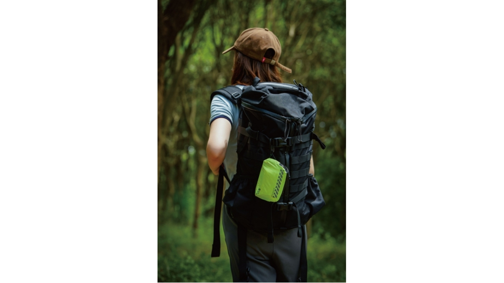

The Survival Margin: Why Outdoor Retailers Are Adding Safety Accessories to Their Product Lines
JUN 21, 2026

Not Every New SKU Deserves Shelf Space
Outdoor retailers face a familiar challenge today. Backpacks, tents and camping furniture have become increasingly competitive, while average order values remain under pressure.
Many brands are therefore looking for compact accessories that require little shelf space, are easy to merchandise, and genuinely improve the outdoor experience. Emergency preparedness products fit naturally into this category—not because they create fear, but because they help customers feel better prepared before heading outdoors.
For buyers, the question is no longer: “Should we carry first aid kits?” It’s becoming: “Which safety products actually add value instead of becoming another slow-moving SKU?”
When a Hike Turns into an Unexpected Overnight Stay
Many search and rescue reports show that hikers rarely become lost because they are inexperienced. More often, people simply take the wrong trail junction, underestimate changing weather conditions, or continue hiking longer than planned.
What begins as a minor navigation error can quickly become an overnight survival situation. Once daylight disappears, the biggest threats are often panic and rapid heat loss rather than injury itself.
For outdoor brands, this highlights an important opportunity: providing customers with lightweight survival tools that are always within reach.
Component One: A Whistle That Actually Matters
When someone is lost, shouting for help is surprisingly ineffective. Fatigue, dehydration and dense woodland quickly reduce the distance a human voice can travel.
Many entry-level first aid kits include whistles that satisfy a basic checklist but are rarely designed for demanding outdoor environments. Customers rarely judge a first aid kit by the zipper or pouch—they judge it by whether the components inside feel dependable.
That’s why our Outdoor STANDARD and Outdoor PLUS kits include a high-decibel emergency whistle designed for effective signalling in open terrain, forests and adverse weather conditions while requiring minimal physical effort from the user.
Component Two: Lightweight Protection Against Hypothermia
An emergency blanket is probably one of the lowest-cost items inside a first aid kit. Ironically, it can become one of the highest-value components when weather conditions suddenly change.
Our oversized medical-grade Emergency Blanket is manufactured from aluminized Mylar, reflecting up to 90% of radiated body heat while creating a lightweight windproof and waterproof barrier.
Packed inside every Outdoor System kit, it occupies almost no space but can significantly improve a user's chances of maintaining core body temperature while waiting for rescue. Sometimes the smallest component becomes the most important one.
Thinking Beyond Individual Products
Instead of asking, “How much does a whistle cost?” many buyers today are asking, “How can one accessory improve the value of an entire outdoor product line?”
For outdoor retailers, compact emergency products create opportunities to:
- Increase average basket value.
- Build complete outdoor safety bundles.
- Strengthen brand credibility.
- Encourage repeat purchases through refill items and accessories.
This is exactly how we designed the GoSafeMed Outdoor System. Rather than selling isolated products, we build modular first aid solutions for different outdoor users:
- MINI — Day hiking and everyday outdoor activities.
- STANDARD — Family camping, trekking and recreational adventures.
- PLUS — Remote expeditions and higher-risk environments with delayed evacuation.
This modular structure allows distributors and outdoor brands to expand their product range without creating unnecessary complexity.
A Reliable Manufacturing Partner Behind Your Brand
Expanding into emergency preparedness products requires more than simply sourcing another factory. Retailers need consistent quality, reliable international logistics and products that meet global compliance requirements.
At GoSafeMed, we work with long-term manufacturing partners specializing in emergency medical products for international markets. Our Outdoor System supports OEM and ODM projects with internationally recognized quality standards including CE, FDA Registration and ISO 13485 manufacturing systems.
Whether you're launching your first outdoor safety collection or expanding an existing product line, we help distributors and brands develop shelf-ready products that combine practical outdoor functionality with reliable medical-quality components.